Table of Contents
9. Probability and Variability
9.1. Discrete Random Variables
9.1.1. Two Types of Random Variables
9.1.2. Probability Distributions for Discrete Random Variables
9.1.3. Expected Values of Discrete Random Variables
9.2. The Binomial Random Variable
9.2.1. The Binomial Formula
9.2.2. Binomial Probability Distributions
9.2.3. Mean, Variance, and Standard Deviation of the Binomial Distribution
9.2.4. Additional Properties of the Binomial Distribution
9.3. Other Random Variables
9.3.1. The Poisson Random Variable
9.3.2. The Hypergeometric Random Variable
9. Probability and Variability
9.1. Discrete Random Variables
9.1.1. Two Types of Random Variables
A random variable $x$ , and its distribution, can be discrete or continuous.
Learning Objective
Contrast discrete and continuous variables
Key Points
- A random variable is a variable taking on numerical values determined by the outcome of a random phenomenon.
- The probability distribution of a random variable $x$ tells us what the possible values of $x$ are and what probabilities are assigned to those values.
- A discrete random variable has a countable number of possible values.
- The probability of each value of a discrete random variable is between 0 and 1, and the sum of all the probabilities is equal to 1.
- A continuous random variable takes on all the values in some interval of numbers.
- A density curve describes the probability distribution of a continuous random variable, and the probability of a range of events is found by taking the area under the curve.
Key Terms
- discrete random variable
- obtained by counting values for which there are no in-between values, such as the integers 0, 1, 2, ….
- continuous random variable
- obtained from data that can take infinitely many values
- random variable
- a quantity whose value is random and to which a probability distribution is assigned, such as the possible outcome of a roll of a die
Random Variables
In probability and statistics, a randomvariable is a variable whose value is subject to variations due to chance (i.e. randomness, in a mathematical sense). As opposed to other mathematical variables, a random variable conceptually does not have a single, fixed value (even if unknown); rather, it can take on a set of possible different values, each with an associated probability.
A random variable's possible values might represent the possible outcomes of a yet-to-be-performed experiment, or the possible outcomes of a past experiment whose already-existing value is uncertain (for example, as a result of incomplete information or imprecise measurements). They may also conceptually represent either the results of an "objectively" random process (such as rolling a die), or the "subjective" randomness that results from incomplete knowledge of a quantity.
Random variables can be classified as either discrete (that is, taking any of a specified list of exact values) or as continuous (taking any numerical value in an interval or collection of intervals). The mathematical function describing the possible values of a random variable and their associated probabilities is known as a probability distribution.
Discrete Random Variables
Discrete random variables can take on either a finite or at most a countably infinite set of discrete values (for example, the integers). Their probability distribution is given by a probability mass function which directly maps each value of the random variable to a probability. For example, the value of $x_1$ takes on the probability $p_1$ , the value of $x_2$ takes on the probability $p_2$ , and so on. The probabilities $p_i$ must satisfy two requirements: every probability $p_i$ is a number between 0 and 1, and the sum of all the probabilities is 1. ($p_1+p_2+\dots + p_k = 1$ )
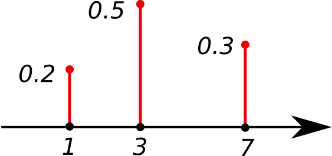{kind=link}
This shows the probability mass function of a discrete probability distribution. The probabilities of the singletons {1}, {3}, and {7} are respectively 0.2, 0.5, 0.3. A set not containing any of these points has probability zero.
Examples of discrete random variables include the values obtained from rolling a die and the grades received on a test out of 100.
Continuous Random Variables
Continuous random variables, on the other hand, take on values that vary continuously within one or more real intervals, and have a cumulative distribution function (CDF) that is absolutely continuous. As a result, the random variable has an uncountable infinite number of possible values, all of which have probability 0, though ranges of such values can have nonzero probability. The resulting probability distribution of the random variable can be described by a probability density, where the probability is found by taking the area under the curve.

The image shows the probability density function (pdf) of the normal distribution, also called Gaussian or "bell curve", the most important continuous random distribution. As notated on the figure, the probabilities of intervals of values corresponds to the area under the curve.
Selecting random numbers between 0 and 1 are examples of continuous random variables because there are an infinite number of possibilities.
9.1.2. Probability Distributions for Discrete Random Variables
Probability distributions for discrete random variables can be displayed as a formula, in a table, or in a graph.
Learning Objective
Give examples of discrete random variables
Key Points
- A discrete probability function must satisfy the following: $0 \leq f(x) \leq 1$ , i.e., the values of $f(x)$ are probabilities, hence between 0 and 1.
- A discrete probability function must also satisfy the following: $\sum f(x) = 1$ , i.e., adding the probabilities of all disjoint cases, we obtain the probability of the sample space, 1.
- The probability mass function has the same purpose as the probability histogram, and displays specific probabilities for each discrete random variable. The only difference is how it looks graphically.
Key Terms
- probability mass function
- a function that gives the relative probability that a discrete random variable is exactly equal to some value
- discrete random variable
- obtained by counting values for which there are no in-between values, such as the integers 0, 1, 2, ….
- probability distribution
- A function of a discrete random variable yielding the probability that the variable will have a given value.
A discrete random variable $x$ has a countable number of possible values. The probability distribution of a discrete random variable $x$ lists the values and their probabilities, where value $x_1$ has probability $p_1$ , value $x_2$ has probability $x_2$ , and so on. Every probability $p_i$ is a number between 0 and 1, and the sum of all the probabilities is equal to 1.
Examples of discrete random variables include:
- The number of eggs that a hen lays in a given day (it can't be 2.3)
- The number of people going to a given soccer match
- The number of students that come to class on a given day
- The number of people in line at McDonald's on a given day and time
A discrete probability distribution can be described by a table, by a formula, or by a graph. For example, suppose that $x$ is a random variable that represents the number of people waiting at the line at a fast-food restaurant and it happens to only take the values 2, 3, or 5 with probabilities $\frac{2}{10}$ , $\frac{3}{10}$ , and $\frac{5}{10}$ respectively. This can be expressed through the function $f(x)= \frac{x}{10}$, $x=2, 3, 5$ or through the table below. Of the conditional probabilities of the event $B$ given that $A_1$ is the case or that $A_2$ is the case, respectively. Notice that these two representations are equivalent, and that this can be represented graphically as in the probability histogram below.
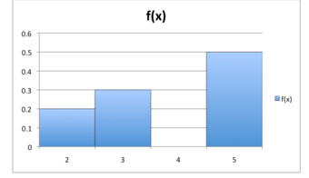{kind=link}
This histogram displays the probabilities of each of the three discrete random variables.
The formula, table, and probability histogram satisfy the following necessary conditions of discrete probability distributions:
- $0 \leq f(x) \leq 1$ , i.e., the values of $f(x)$ are probabilities, hence between 0 and 1.
- $\sum f(x) = 1$ , i.e., adding the probabilities of all disjoint cases, we obtain the probability of the sample space, 1.
Sometimes, the discrete probability distribution is referred to as the probability mass function (pmf). The probability mass function has the same purpose as the probability histogram, and displays specific probabilities for each discrete random variable. The only difference is how it looks graphically.
{kind=link}
This shows the graph of a probability mass function. All the values of this function must be non-negative and sum up to 1.
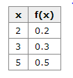{kind=link}
This table shows the values of the discrete random variable can take on and their corresponding probabilities.
9.1.3. Expected Values of Discrete Random Variables
The expected value of a random variable is the weighted average of all possible values that this random variable can take on.
Learning Objective
Calculate the expected value of a discrete random variable
Key Points
- The expected value of a random variable $X$ is defined as: $E[X] = x_1p_1 + x_2p_2 + \dots + x_ip_i$ , which can also be written as: $E[X] = \sum x_ip_i$ .
- If all outcomes $x_i$ are equally likely (that is, $p_1=p_2=\dots = p_i$ ), then the weighted average turns into the simple average.
- The expected value of $X$ is what one expects to happen on average, even though sometimes it results in a number that is impossible (such as 2.5 children).
Key Terms
- expected value
- of a discrete random variable, the sum of the probability of each possible outcome of the experiment multiplied by the value itself
- discrete random variable
- obtained by counting values for which there are no in-between values, such as the integers 0, 1, 2, ….
Discrete Random Variable
A discrete random variable $X$ has a countable number of possible values. The probability distribution of a discrete random variable $X$ lists the values and their probabilities, such that $x_i$ has a probability of $p_i$ . The probabilities $p_i$ must satisfy two requirements:
- Every probability $p_i$ is a number between 0 and 1.
- The sum of the probabilities is 1: $p_1+p_2+\dots + p_i = 1$ .
Expected Value Definition
In probability theory, the expected value (or expectation, mathematical expectation, EV, mean, or first moment) of a random variable is the weighted average of all possible values that this random variable can take on. The weights used in computing this average are probabilities in the case of a discrete random variable.
The expected value may be intuitively understood by the law of large numbers: the expected value, when it exists, is almost surely the limit of the sample mean as sample size grows to infinity. More informally, it can be interpreted as the long-run average of the results of many independent repetitions of an experiment (e.g. a dice roll). The value may not be expected in the ordinary sense—the "expected value" itself may be unlikely or even impossible (such as having 2.5 children), as is also the case with the sample mean.
How To Calculate Expected Value
Suppose random variable $X$ can take value $x_1$ with probability $p_1$ , value $x_2$ with probability $p_2$ , and so on, up to value $x_i$ with probability $p_i$ . Then the expectation value of a random variable $X$ is defined as: $E[X] = x_1p_1 + x_2p_2 + \dots + x_ip_i$ , which can also be written as: $E[X] = \sum x_ip_i$ .
If all outcomes $x_i$ are equally likely (that is, $p_1 = p_2 = \dots = p_i$ ), then the weighted average turns into the simple average. This is intuitive: the expected value of a random variable is the average of all values it can take; thus the expected value is what one expects to happen on average. If the outcomes $x_i$ are not equally probable, then the simple average must be replaced with the weighted average, which takes into account the fact that some outcomes are more likely than the others. The intuition, however, remains the same: the expected value of $X$ is what one expects to happen on average.
For example, let $X$ represent the outcome of a roll of a six-sided die. The possible values for $X$ are 1, 2, 3, 4, 5, and 6, all equally likely (each having the probability of $\frac{1}{6}$ ). The expectation of $X$ is: $E[X] = \frac{1x_1}{6} + \frac{2x_2}{6} + \frac{3x_3}{6} + \frac{4x_4}{6} + \frac{5x_5}{6} + \frac{6x_6}{6} = 3.5$ . In this case, since all outcomes are equally likely, we could have simply averaged the numbers together: $\frac{1+2+3+4+5+6}{6} = 3.5$ .
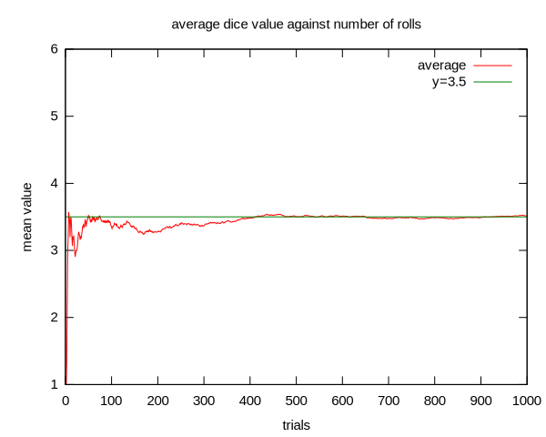{kind=link}
An illustration of the convergence of sequence averages of rolls of a die to the expected value of 3.5 as the number of rolls (trials) grows.
9.2. The Binomial Random Variable
9.2.1. The Binomial Formula
The binomial distribution is a discrete probability distribution of the successes in a sequence of $n$ independent yes/no experiments.
Learning Objective
Employ the probability mass function to determine the probability of success in a given amount of trials
Key Points
- The probability of getting exactly $k$ successes in $n$ trials is given by the Probability Mass Function.
- The binomial distribution is frequently used to model the number of successes in a sample of size $n$ drawn with replacement from a population of size $N$ .
- The binomial distribution is the discrete probability distribution of the number of successes in a sequence of $n$ independent yes/no experiments, each of which yields success with probability $p$ .
Key Terms
- probability mass function
- a function that gives the probability that a discrete random variable is exactly equal to some value
- central limit theorem
- a theorem which states that, given certain conditions, the mean of a sufficiently large number of independent random variables--each with a well-defined mean and well-defined variance-- will be approximately normally distributed
Example
- The four possible outcomes that could occur if you flipped a coin twice are listed in Table 1. Note that the four outcomes are equally likely: each has probability of $\frac{1}{4}$ . To see this, note that the tosses of the coin are independent (neither affects the other). Hence, the probability of a head on flip one and a head on flip two is the product of $P(H)$ and $P(H)$ , which is $\frac{1}{2} \cdot \frac{1}{2} = \frac{1}{4}$ . The same calculation applies to the probability of a head on flip one and a tail on flip two. Each is $\frac{1}{2} \cdot \frac{1}{2} = \frac{1}{4}$ . The four possible outcomes can be classified in terms of the number of heads that come up. The number could be two (Outcome 1), one (Outcomes 2 and 3) or 0 (Outcome 4). The probabilities of these possibilities are shown in Table 2 and in Figure 1. Since two of the outcomes represent the case in which just one head appears in the two tosses, the probability of this event is equal to $\frac{1}{4} + \frac{1}{4} = \frac{1}{2}$ . Table 1 summarizes the situation. Table 1 is a discrete probability distribution: It shows the probability for each of the values on the $x$ -axis. Defining a head as a "success," Table 1 shows the probability of 0, 1, and 2 successes for two trials (flips) for an event that has a probability of 0.5 of being a success on each trial. This makes Table 1 an example of a binomial distribution.
In probability theory and statistics, the binomial distribution is the discrete probability distribution of the number of successes in a sequence of $n$ independent yes/no experiments, each of which yields success with probability $p$ . The binomial distribution is the basis for the popular binomial test of statistical significance.
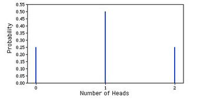{kind=link}
This is a graphic representation of a binomial probability distribution.
The binomial distribution is frequently used to model the number of successes in a sample of size $n$ drawn with replacement from a population of size $N$ . If the sampling is carried out without replacement, the draws are not independent and so the resulting distribution is a hypergeometric distribution, not a binomial one. However, for $N$ much larger than $n$ , the binomial distribution is a good approximation, and widely used.
In general, if the random variable $X$ follows the binomial distribution with parameters $n$ and $p$ , we write $X \sim B(n, p)$ . The probability of getting exactly $k$ successes in $n$ trials is given by the Probability Mass Function:
For $k = 0, 1, 2, \dots, n$ where:
Is the binomial coefficient (hence the name of the distribution) "n choose k," also denoted $C(n, k)$ or $_nC_k$ . The formula can be understood as follows: We want $k$ successes ($p^k$) and $n-k$ failures ($(1-p)^{n-k}$ ); however, the $k$ successes can occur anywhere among the $n$ trials, and there are $C(n, k)$ different ways of distributing $k$ successes in a sequence of $n$ trials.
One straightforward way to simulate a binomial random variable $X$ is to compute the sum of $n$ independent 0−1 random variables, each of which takes on the value 1 with probability $p$ . This method requires $n$ calls to a random number generator to obtain one value of the random variable. When $n$ is relatively large (say at least 30), the Central Limit Theorem implies that the binomial distribution is well-approximated by the corresponding normal density function with parameters $\mu = np$ and $\sigma = \sqrt{npq}$.
Figures from the Example
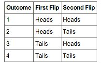{kind=link}
These are the four possible outcomes from flipping a coin twice.
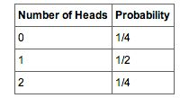{kind=link}
These are the probabilities of the 2 coin flips.
9.2.2. Binomial Probability Distributions
This chapter explores Bernoulli experiments and the probability distributions of binomial random variables.
Learning Objective
Apply Bernoulli distribution in determining success of an experiment
Key Points
- A Bernoulli (success-failure) experiment is performed $n$ times, and the trials are independent.
- The probability of success on each trial is a constant $p$ ; the probability of failure is $q=1-p$ .
- The random variable $X$ counts the number of successes in the $n$ trials.
Key Term
- Bernoulli Trial
- an experiment whose outcome is random and can be either of two possible outcomes, "success" or "failure"
Example
- At ABC College, the withdrawal rate from an elementary physics course is 30% for any given term. This implies that, for any given term, 70% of the students stay in the class for the entire term. A "success" could be defined as an individual who withdrew. The random variable is $X$ : the number of students who withdraw from the randomly selected elementary physics class.
Many random experiments include counting the number of successes in a series of a fixed number of independently repeated trials, which may result in either success or failure. The distribution of the number of successes is a binomial distribution. It is a discrete probability distribution with two parameters, traditionally indicated by $n$ , the number of trials, and $p$ , the probability of success. Such a success/failure experiment is also called a Bernoulli experiment, or Bernoulli trial; when $n=1$ , the Bernoulli distribution is a binomial distribution.
Named after Jacob Bernoulli, who studied them extensively in the 1600s, a well known example of such an experiment is the repeated tossing of a coin and counting the number of times "heads" comes up.
In a sequence of Bernoulli trials, we are often interested in the total number of successes and not in the order of their occurrence. If we let the random variable $X$ equal the number of observed successes in $n$ Bernoulli trials, the possible values of $X$ are $0, 1, 2, \dots, n$ . If $x$ success occur, where $x=0, 1, 2, \dots, n$ , then $n-x$ failures occur. The number of ways of selecting $x$ positions for the $x$ successes in the $x$ trials is:
Since the trials are independent and since the probabilities of success and failure on each trial are, respectively, $p$ and $q=1-p$ , the probability of each of these ways is $p^x(1-p)^{n-x}$ . Thus, the p.d.f. of $X$ , say $f(x)$ , is the sum of the probabilities of these ($nx$) mutually exclusive events--that is,
$f(x)=(nx)p^x(1-p)^{n-x}$, $x=0, 1, 2, \dots, n$
These probabilities are called binomial probabilities, and the random variable $X$ is said to have a binomial distribution.
{kind=link}
These male (a) and female (b) catkins from the goat willow tree (Salix caprea) have structures that are light and feathery to better disperse and catch the wind-blown pollen.

A graph of binomial probability distributions that vary according to their corresponding values for $n$ and $p$ .
9.2.3. Mean, Variance, and Standard Deviation of the Binomial Distribution
In this section, we'll examine the mean, variance, and standard deviation of the binomial distribution.
Learning Objective
Examine the different properties of binomial distributions
Key Points
- The mean of a binomial distribution with parameters $N$ (the number of trials) and $p$ (the probability of success for each trial) is $m=Np$ .
- The variance of the binomial distribution is $s^2 = Np(1-p)$ , where $s^2$ is the variance of the binomial distribution.
- The standard deviation ($s$ ) is the square root of the variance ($s^2$ ).
Key Terms
- variance
- a measure of how far a set of numbers is spread out
- mean
- one measure of the central tendency either of a probability distribution or of the random variable characterized by that distribution
- standard deviation
- shows how much variation or dispersion exists from the average (mean), or expected value
As with most probability distributions, examining the different properties of binomial distributions is important to truly understanding the implications of them. The mean, variance, and standard deviation are three of the most useful and informative properties to explore. In this next section we'll take a look at these different properties and how they are helpful in establishing the usefulness of statistical distributions. The easiest way to understand the mean, variance, and standard deviation of the binomial distribution is to use a real life example.
Consider a coin-tossing experiment in which you tossed a coin 12 times and recorded the number of heads. If you performed this experiment over and over again, what would the mean number of heads be? On average, you would expect half the coin tosses to come up heads. Therefore, the mean number of heads would be 6. In general, the mean of a binomial distribution with parameters $N$ (the number of trials) and $p$ (the probability of success for each trial) is:
Where $m$ is the mean of the binomial distribution.
The variance of the binomial distribution is:
$s^2 = Np(1-p)$ , where $s^2$ is the variance of the binomial distribution.
The coin was tossed 12 times, so $N=12$ . A coin has a probability of 0.5 of coming up heads. Therefore, $p=0.5$ . The mean and standard deviation can therefore be computed as follows:
Naturally, the standard deviation ($s$ ) is the square root of the variance ($s^2$ ).
{kind=link}
Coin flip experiments are a great way to understand the properties of binomial distributions.
9.2.4. Additional Properties of the Binomial Distribution
In this section, we'll look at the median, mode, and covariance of the binomial distribution.
Learning Objective
Explain some results of finding the median in binomial distribution
Key Points
- There is no single formula for finding the median of a binomial distribution.
- The mode of a binomial $B(n, p)$ distribution is equal to.
- If two binomially distributed random variables $X$ and $Y$ are observed together, estimating their covariance can be useful.
Key Terms
- median
- the numerical value separating the higher half of a data sample, a population, or a probability distribution, from the lower half
- Mode
- the value that appears most often in a set of data
- floor function
- maps a real number to the smallest following integer
- covariance
- A measure of how much two random variables change together.
In general, there is no single formula for finding the median of a binomial distribution, and it may even be non-unique. However, several special results have been established:
If $np$ is an integer, then the mean, median, and mode coincide and equal $np$ .
Any median $m$ must lie within the interval $\lfloor np\rfloor \leq m \leq \lceil np\rceil $ .
A median $m$ cannot lie too far away from the mean: $|m np| \leq \min { \ln { 2 } } ,\max { (p,1 - p )}$ .
The median is unique and equal to $m = round(np)$ in cases where either $p \leq 1 \ln 2$ or $p \geq \ln 2$ or $|m np| \leq \min{(p, 1 p)}$ (except for the case when $p = \frac{1}{2}$ and n is odd).
When$p = \frac{1}{2}$ and n is odd, any number m in the interval $\frac{1}{2} \cdot (n 1) \leq m \leq \frac{1}{2} \cdot (n + 1)$ is a median of the binomial distribution. If $p = \frac{1}{2}$ and n is even, then $m = \frac{n}{2}$ is the unique median.
There are also conditional binomials. If $X \sim B(n, p)$ and, conditional on $X, Y \sim B(X, q)$ , then Y is a simple binomial variable with distribution.
The binomial distribution is a special case of the Poisson binomial distribution, which is a sum of n independent non-identical Bernoulli trials Bern(pi). If X has the Poisson binomial distribution with p1=…=pn=pp1=\ldots =pn=p then ∼B(n,p)\sim B(n, p).
Usually the mode of a binomial B(n, p) distribution is equal to where is the floor function. However, when $(n + 1)p$ is an integer and p is neither 0 nor 1, then the distribution has two modes: $(n + 1)p$ and $(n + 1)p 1$ . When p is equal to 0 or 1, the mode will be 0 and n, respectively. These cases can be summarized as follows:
{kind=link}
This summarizes how to find the mode of a binomial distribution.
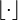{kind=link}
Floor function is the lowest previous integer in a series.
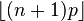{kind=link}
This formula is for calculating the mode of a binomial distribution.
If two binomially distributed random variables X and Y are observed together, estimating their covariance can be useful. Using the definition of covariance, in the case n = 1 (thus being Bernoulli trials) we have .
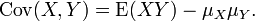{kind=link}
The first part of finding covariance.
The first term is non-zero only when both X and Y are one, and μX and μY are equal to the two probabilities. Defining pB as the probability of both happening at the same time, this gives and for n independent pairwise trials .
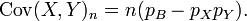{kind=link}
The final formula for the covariance of a binomial distribution.

The next step in determining covariance.
If X and Y are the same variable, this reduces to the variance formula given above.
9.3. Other Random Variables
9.3.1. The Poisson Random Variable
The Poisson random variable is a discrete random variable that counts the number of times a certain event will occur in a specific interval.
Learning Objective
Apply the Poisson random variable to fields outside of mathematics
Key Points
- The Poisson distribution predicts the degree of spread around a known average rate of occurrence.
- The distribution was first introduced by Siméon Denis Poisson (1781–1840) and published, together with his probability theory, in his work "Research on the Probability of Judgments in Criminal and Civil Matters" (1837).
- The Poisson random variable is the number of successes that result from a Poisson experiment.
- Given the mean number of successes (μ) that occur in a specified region, we can compute the Poisson probability based on the following formula: P(x; μ) = (e-μ) (μx) / x!.
Key Terms
- factorial
- The result of multiplying a given number of consecutive integers from 1 to the given number. In equations, it is symbolized by an exclamation mark (!). For example, 5! = 1 * 2 * 3 * 4 * 5 = 120.
- Poisson distribution
- A discrete probability distribution that expresses the probability of a given number of events occurring in a fixed interval of time and/or space, if these events occur with a known average rate and independently of the time since the last event.
- disjoint
- having no members in common; having an intersection equal to the empty set.
Example
- The average number of homes sold by the Acme Realty company is 2 homes per day. What is the probability that exactly 3 homes will be sold tomorrow? This is a Poisson experiment in which we know the following: μ = 2; since 2 homes are sold per day, on average. x = 3; since we want to find the likelihood that 3 homes will be sold tomorrow. e = 2.71828; since e is a constant equal to approximately 2.71828. We plug these values into the Poisson formula as follows: P(x; μ) = (e-μ) (μx) / x! : P(3; 2) = (2.71828-2) (23) / 3! : P(3; 2) = (0.13534) (8) / 6 : P(3; 2) = 0.180. Thus, the probability of selling 3 homes tomorrow is 0.180.
The Poisson Distribution and Its History
The Poisson distribution is a discrete probability distribution. It expresses the probability of a given number of events occurring in a fixed interval of time and/or space, if these events occur with a known average rate and independently of the time since the last event. The Poisson distribution can also be used for the number of events in other specified intervals such as distance, area, or volume.
For example: Let's suppose that, on average, a person typically receives four pieces of mail per day. There will be a certain spread—sometimes a little more, sometimes a little less, once in a while nothing at all. Given only the average rate for a certain period of observation (i.e., pieces of mail per day, phonecalls per hour, etc.), and assuming that the process that produces the event flow is essentially random, the Poisson distribution specifies how likely it is that the count will be 3, 5, 10, or any other number during one period of observation. It predicts the degree of spread around a known average rate of occurrence.
The distribution was first introduced by Siméon Denis Poisson (1781–1840) and published, together with his probability theory, in 1837 in his work Recherches sur la Probabilité des Jugements en Matière Criminelle et en Matière Civile ("Research on the Probability of Judgments in Criminal and Civil Matters"). The work focused on certain random variables N that count, among other things, the number of discrete occurrences (sometimes called "events" or "arrivals") that take place during a time interval of given length.
Properties of the Poisson Random Variable
A Poisson experiment is a statistical experiment that has the following properties:
- The experiment results in outcomes that can be classified as successes or failures.
- The average number of successes (μ) that occurs in a specified region is known.
- The probability that a success will occur is proportional to the size of the region.
- The probability that a success will occur in an extremely small region is virtually zero.
Note that the specified region could take many forms: a length, an area, a volume, a period of time, etc.
The Poisson random variable, then, is the number of successes that result from a Poisson experiment, and the probability distribution of a Poisson random variable is called a Poisson distribution. Given the mean number of successes (μ) that occur in a specified region, we can compute the Poisson probability based on the following formula:
$P(x; \mu ) = ((e^{-\mu }) (\mu ^x)) / x!$ ,
where:
- e = a constant equal to approximately 2.71828 (actually, e is the base of the natural logarithm system);
- μ = the mean number of successes that occur in a specified region;
- x: the actual number of successes that occur in a specified region;
- P(x; μ): the Poisson probability that exactly x successes occur in a Poisson experiment, when the mean number of successes is μ; and
- x! is the factorial of x.
The Poisson random variable satisfies the following conditions:
- The number of successes in two disjoint time intervals is independent.
- The probability of a success during a small time interval is proportional to the entire length of the time interval.
- The mean of the Poisson distribution is equal to μ.
- The variance is also equal to μ.
Apart from disjoint time intervals, the Poisson random variable also applies to disjoint regions of space.
Example
The average number of homes sold by the Acme Realty company is 2 homes per day. What is the probability that exactly 3 homes will be sold tomorrow? This is a Poisson experiment in which we know the following:
- μ = 2; since 2 homes are sold per day, on average.
- x = 3; since we want to find the likelihood that 3 homes will be sold tomorrow.
- e = 2.71828; since e is a constant equal to approximately 2.71828.
We plug these values into the Poisson formula as follows:
Thus, the probability of selling 3 homes tomorrow is 0.180.
Applications of the Poisson Random Variable
Applications of the Poisson distribution can be found in many fields related to counting:
- electrical system example: telephone calls arriving in a system
- astronomy example: photons arriving at a telescope
- biology example: the number of mutations on a strand of DNA per unit length
- management example: customers arriving at a counter or call center
- civil engineering example: cars arriving at a traffic light
- finance and insurance example: number of losses/claims occurring in a given period of time
Examples of events that may be modelled as a Poisson distribution include:
- the number of soldiers killed by horse-kicks each year in each corps in the Prussian cavalry (this example was made famous by a book of Ladislaus Josephovich Bortkiewicz (1868–1931);
- the number of yeast cells used when brewing Guinness beer (this example was made famous by William Sealy Gosset (1876–1937);
- the number of goals in sports involving two competing teams;
- the number of deaths per year in a given age group; and
- the number of jumps in a stock price in a given time interval.
{kind=link}
The horizontal axis is the index k, the number of occurrences. The function is only defined at integer values of k. The connecting lines are only guides for the eye.
9.3.2. The Hypergeometric Random Variable
A hypergeometric random variable is a discrete random variable characterized by a fixed number of trials with differing probabilities of success.
Learning Objective
Contrast hypergeometric distribution and binomial distribution
Key Points
- The hypergeometric distribution applies to sampling without replacement from a finite population whose elements can be classified into two mutually exclusive categories like pass/fail, male/female or employed/unemployed.
- As random selections are made from the population, each subsequent draw decreases the population causing the probability of success to change with each draw.
- It is in contrast to the binomial distribution, which describes the probability of $k$ successes in $n$ draws with replacement.
Key Terms
- binomial distribution
- the discrete probability distribution of the number of successes in a sequence of
$n$ independent yes/no experiments, each of which yields success with probability$p$ - hypergeometric distribution
- a discrete probability distribution that describes the number of successes in a sequence of
$n$ draws from a finite population without replacement - Bernoulli Trial
- an experiment whose outcome is random and can be either of two possible outcomes, "success" or "failure"
The hypergeometric distribution is a discrete probability distribution that describes the probability of $k$ successes in $n$ draws without replacement from a finite population of size $N$ containing a maximum of $K$ successes. This is in contrast to the binomial distribution, which describes the probability of $k$ successes in $n$ draws with replacement.
The hypergeometric distribution applies to sampling without replacement from a finite population whose elements can be classified into two mutually exclusive categories like pass/fail, male/female or employed/unemployed. As random selections are made from the population, each subsequent draw decreases the population causing the probability of success to change with each draw. The following conditions characterize the hypergeometric distribution:
- The result of each draw can be classified into one or two categories.
- The probability of a success changes on each draw.
A random variable follows the hypergeometric distribution if its probability mass function is given by:
Where:
- $N$ is the population size,
- $K$ is the number of success states in the population,
- $n$ is the number of draws,
- $k$ is the number of successes, and
- $\displaystyle {{a}\choose{b}}$ is a binomial coefficient.
A hypergeometric probability distribution is the outcome resulting from a hypergeometric experiment. The characteristics of a hypergeometric experiment are:
- You take samples from 2 groups.
- You are concerned with a group of interest, called the first group.
- You sample without replacement from the combined groups. For example, you want to choose a softball team from a combined group of 11 men and 13 women. The team consists of 10 players.
- Each pick is not independent, since sampling is without replacement. In the softball example, the probability of picking a women first is $\frac{13}{24}$ . The probability of picking a man second is $\frac{11}{23}$ , if a woman was picked first. It is $\frac{10}{23}$ if a man was picked first. The probability of the second pick depends on what happened in the first pick.
- You are not dealing with Bernoulli Trials.